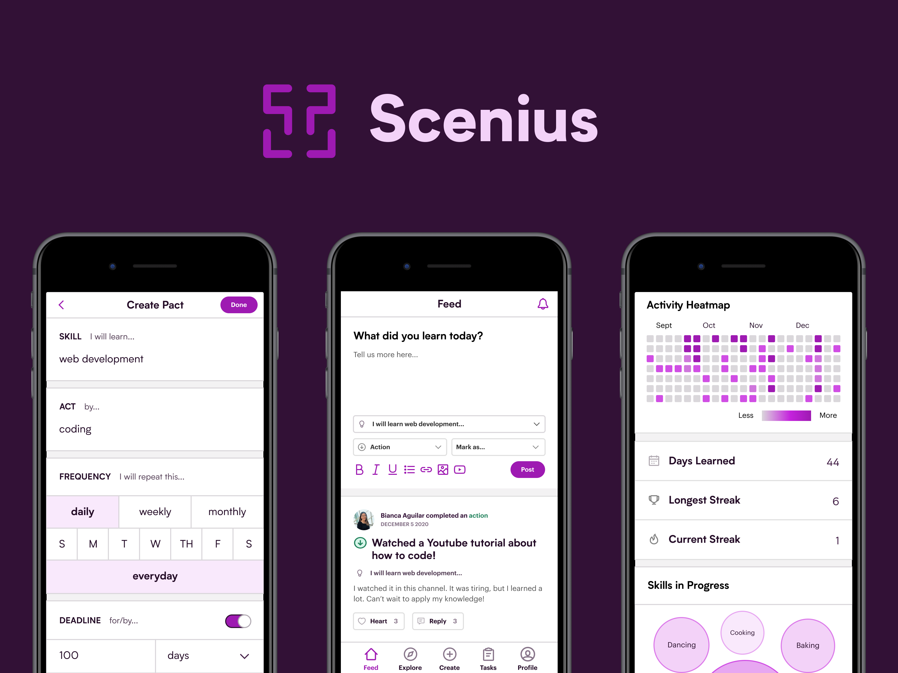

USER EXPERIENCE SOCIETY
Developing design foundations online
A preview of my toolkit as a design educator, shown through a workshop series I created for a student-run organization advocating & practicing human-centered design.
Read case study →

SCENIUS
Creating a proof-of-work mechanism for learning
An all-in-one tracker & community for learning a.k.a. the Strava for personal growth. First Place Runner-Up of the Interhackt designathon (by peer voting).
Read case study →

DEVELOPH
Profiling a budding tech community
A research report for guiding a student-led tech non-profit in providing community-centered experiences.
Read case study →
INSUREPLUS
Growing a local insurtech startup
A special membership program where people can get life insurance from top providers in the Philippines.
Read case study →
VISUALS
Explorations of graphic design
A compilation of design work for mental health, tech, and more over the years.
Read more →